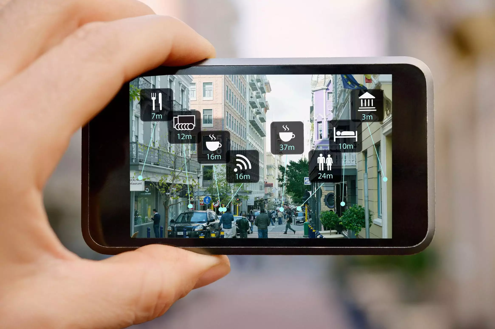

Accessibility of distance learning
Applications Of Mixed Reality
Mixed reality has been around for years, but not until the last 10 years that it came by to the surface thanks to advance development of smartphones with Android and iOS, that are equipped with gyroscopes, GPS and Cameras which are getting better and better by years to come. This development led to the fruition of true capabilities for Mixed Reality. The later combines virtual reality and the real world in the form of videos graphically enhanced. And can be experienced through either headsets that people wear, or simply mobile devices.  The military uses augmented reality to assist men and women as they make repairs in the field. Medical personnel use AR to prepare for surgeries. The possible commercial and educational applications are unlimited. Especially during the latest pandemic where distance presented a huge obstacle for education. MR still have room to prove that it can be THE solution for such circumstances.
How Mixed Reality can Help Disabled People
- Education Researchers have recently used virtual reality training programs to teach autistic children how to cross the roads safely. The research showed that after a month-long exercise, researchers established that virtual reality training significantly improved the ability of the children to cross the road.
- Navigating It is often complex, when visiting new places, for physically disabled people to navigate or find their ways around a city. Virtual reality can help provide a simulated environment of the city and thus allow the disabled individual to have a feel of the city and get used to the most accessible routes to use.
- Muscle Recovery Virtual reality is also useful in helping people who have suffered from strokes or sports-related injuries and even vestibular system issues to improve their motor skills and help in muscle recovery. According to research even the act of imagining that one is performing an activity is enough to stimulate the relevant parts of the brain needed to perform the activity.
- Low Vision Some conditions such as Stargardt’s disease can lead to visual impairment in the form of reduced central detailed vision. However, research has established that it is possible to use VR to help people with such visual disabilities see images with greater clarity.